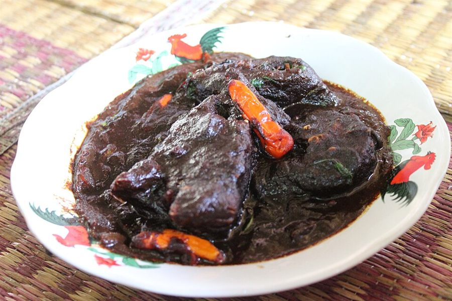
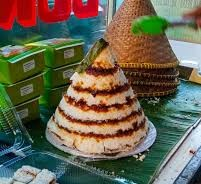
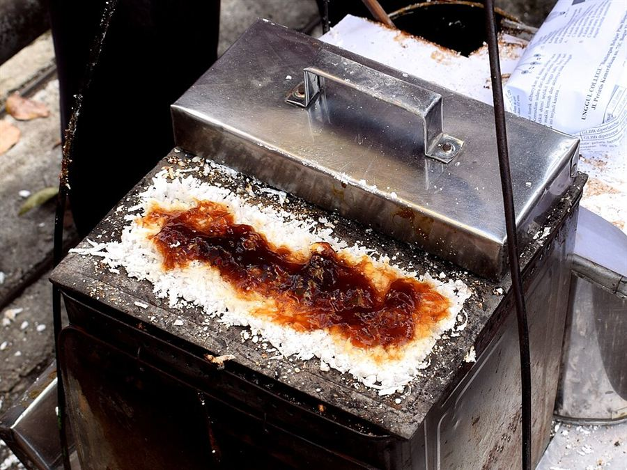
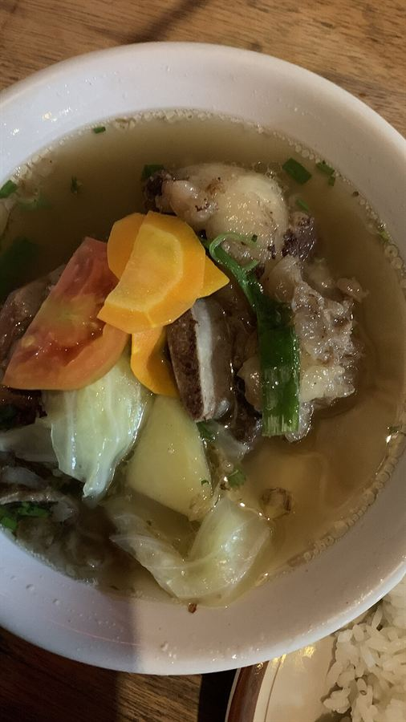

Authentic Betawi and Bekasi delicacies rich in spices and local tradition.

Sayur Gabus Pucung is a traditional Betawi dish consisting of cork fish cooked in a thick black sauce, resulting from the use of kluwak (pucung).

Kue Dongkal is a traditional Betawi cake made from rice flour steamed with palm sugar.

Kue Rangi is a traditional Betawi cake made from a mixture of sago flour and grated coconut.

Sop Janda is a spicy Indonesian soup dish usually made from beef or beef ribs.